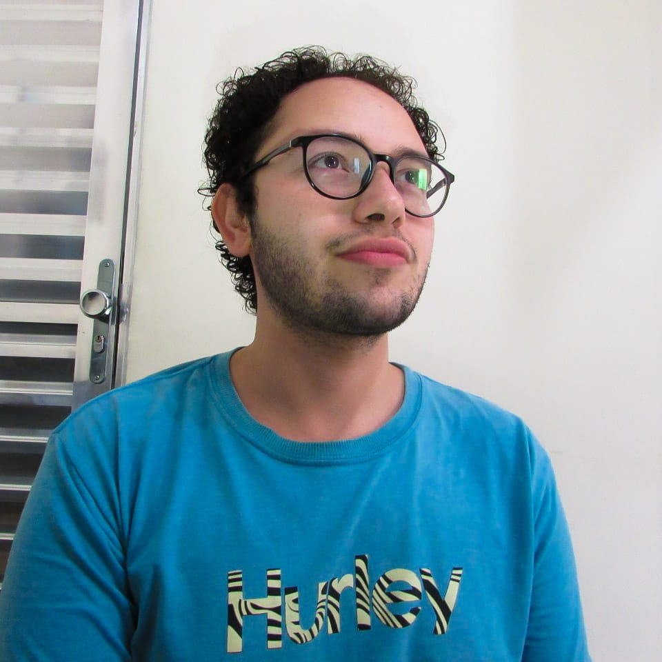

Bom dia a todes! Meu nome é Charles, tenho 25 anos, sou casado, e tenho interesse na tecnologia desde pequeno, da época que eu não tinha um computador, e ia nas lan-houses para me aventurar em fazer pesquisas e trabalhos no Google e no Word, e também jogar um pouco.
Sempre tive muita curiosidade de como as coisas funcionavam, por isso vivia montando e desmontando as coisas de casa, e quando eu completei meus 15 anos, ganhei um computador, e essa paixão pelo mundo tec aumentava cada dia mais.
Na minha cabeça imaginava “Olha as possibilidades que eu não tenho agora que tenho um computador em casa!”, quando completei o ensino médio, não sabia por qual caminho seguir, e fui parar na Fisioterapia, essa experiência agregou muito nos meus conhecimentos e habilidades, porém ainda não me via realizado na área. E quando eu tive a oportunidade de trabalhar em uma loja de pequeno porte, senti a necessidade de ter um estoque, foi ai que pedi para realizar tal tarefa aos donos, e eles super me apoiaram, naquele momento meus olhos brilharam para o que eu tinha feito naquele simples computador.
Com o conhecimento adquirido na Generation, tive a oportunidade de criar meus próprios projetos, e também trabalhar em equipe com meus colegas nos projetos feitos no BootCamp.
Hoje já fiz diversos cursos na área de programação e desenvolvimento, como por exemplo na Udemy, e também na Fundação Bradesco, e em outras linguagens como por exemplo o PHP, sou estudante de Analise e Desenvolvimento de Sistemas, e um Desenvolvedor Java FullStack pela Generation Brasil, pronto para atuar como tal, e sempre lapidando e aperfeiçoando meus conhecimentos na área, muito obrigado a todes!
